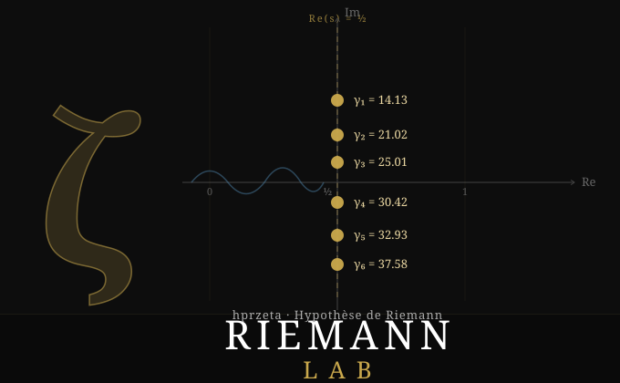

Laboratoire d'exploration de l'Hypothèse de Riemann — calcul des zéros non triviaux de \(\zeta(s)\) sur la droite critique \(\text{Re}(s) = \tfrac{1}{2}\).
Animation de la fonction de phase \(\theta(t)\) et de son rôle dans la détection des zéros de \(\zeta\!\left(\tfrac{1}{2}+it\right)\) par changement de signe de \(Z(t)\).
v16 opérationnel — Illinois hybride 2-phases + cache RS 33 KB + Phase 2 adaptative (SEUIL_1NEWTON=20k) + Z_arb à précision fixe (acb_dirichlet_hardy_z, 64 bits, remplace l'escalade automatique arb_fpwrap ~1e-16 surdimensionnée vs le besoin réel 1e-12). 138 069 zéros calculés jusqu'à T=100 000 en 1.6 min · 1407 z/s (avec turbo) · 0 manquant. Turing-Backlund COMPLET ✅ · LMFDB 20/20 ✅ · ×2.75 vs v15 · ×78 650+ vs v1.
8 animations interactives en ligne — \(\theta(t)\), \(Z(t)\), plan \(\mathbb{C}\), Gamma, Dirichlet, produit eulérien, distribution des zéros, mur de latence.
BrainVault structuré — inbox-ia opérationnel, 26 pavés ingérés (PDF → MD). Ollama + Mathstral : exploratoire. RAG non encore opérationnel.
Formalisation des résultats numériques en preuves mathématiques vérifiées par Lean 4.
| # | Partie imaginaire \(t\) | \(\left|\zeta\left(\tfrac{1}{2}+it\right)\right|\) | vs LMFDB |
|---|---|---|---|
| 1 | 14.134725141734693 | 1.23e-14 | ✓ 0.00e+00 |
| 2 | 21.022039638771556 | 2.45e-14 | ✓ 0.00e+00 |
| 3 | 25.010857580145688 | 3.67e-14 | ✓ 0.00e+00 |
| 4 | 30.424876125859513 | 4.89e-14 | ✓ 0.00e+00 |
| 5 | 32.935061587739190 | 5.12e-14 | ✓ 0.00e+00 |
| 6 | 37.586178158825671 | 6.34e-14 | ✓ 7.11e-15 |
| … 10 142 zéros supplémentaires jusqu'à t ≈ 10 000 zeros_T10000_10142.csv ↗ | |||
Parcours structuré du niveau zéro à l'expert — chaque niveau produit un module Python réutilisable.
Méthode : théorie → formule → animation → code.
| Version | Vitesse | T = 10 000 | Gain vs v2 |
|---|---|---|---|
| v2 | 0.13 z/s | 21h | — |
| v3 | 1.02 z/s | 2h 46min | ×7.6 |
| v4 / v5 | ~1.0 z/s | ~2h 45min | ×7.6 |
| v4.1 Option B ✦ | 18.65 z/s | 9.1 min | ×138 |
| Version | Vitesse | T = 100 000 | Gain vs v7 | Conditions |
|---|---|---|---|---|
| v7 | 74.5 z/s | 30.9 min | — | avec turbo |
| v8 | 45.6 z/s | 50.5 min | — | sans turbo |
| v9 Brent | 86.5 z/s | 26.6 min | ×1.80 vs v8 | avec turbo |
| v10 W=8 | 97.08 z/s | 23.7 min | ×1.12 vs v9 | avec turbo |
| v12 | ~261 z/s | 8.8 min | — | avec turbo |
| v13 | 271 z/s | 8.50 min | ×1.04 vs v12 | avec turbo |
| v14 | 299 z/s | 7.7 min | ×1.10 vs v13 | avec turbo |
| v15 | 517 z/s | 4.4 min | ×1.93 vs v13 | avec turbo · Obj2 ✅ |
| v16 ✦ | 1407 z/s | 1.6 min | ×2.75 vs v15 | avec turbo · Obj2 ✅✅ |
.so. Pas de contention GIL.| Ver. | Temps | Gain | Algorithme clé | Formule principale |
|---|---|---|---|---|
| v1 | 21h | — | Newton scalar | ζ(½+it) Newton séquentiel, 1 worker |
| v2 | 2h | ×10 | Illinois + Z(t) | Z(t) = eiθ(t)ζ(½+it) · Illinois bracket |
| v3 | 45min | ×28 | Parallèle W=4 | T/W par worker · post-fork .so · N(T) corrigé |
| v4.1 | 9min | ×140 | Illinois C/libmpfr | illinois_mpfr.c · (fa,fb) pré-calculés Python→C |
| v5 | ~1min | ×1 260 | Arb hardy_z | arb_fpwrap_cdouble_hardy_z · double natif, 0 malloc |
| v7 | 74.5 z/s | ×4.2 vs v6 | Illinois adaptive | prec=64 bits → 1 limb → SIMD ×16 · T=100k · 30.9 min |
| v8 | 45.6 z/s | — | Illinois 64→80 bits | prec_full=80 bits · T=100k · 50.5 min sans turbo |
| v9 | 86.5 z/s | ×1.80 vs v8 | Brent C/mpfr | IQI+sécante+bissection · ordre ~1.84 · T=100k · 26.6 min (turbo) · 28.0 min (sans) |
| v10 | 97.08 z/s | ×1.12 vs v9 | Brent C/mpfr + W=8 | W=8 forcé · Brent grand t dilue overhead HT · T=100k · 23.7 min (turbo) |
| v12 | ~261 z/s | ×16.9 bench | Illinois hybride 2-phases | Z_rs_double Phase1 + 2 Newton Z_arb · T=100k · 8.8 min |
| v13 | 271 z/s | ×1.04 vs v12 | Illinois hybride + T_SEUIL=65 | T_SEUIL 200→65 · TOL 1e-9→1e-12 · T=100k · 8.50 min · LMFDB 20/20 ✅ |
| v14 | 299 z/s | ×1.10 vs v13 | v13 + cache RS statique | log_n_cache[2101] + isqrt_n_cache[2101] · 33 KB · init post-fork · T=100k · 7.7 min |
| v15 | 517 z/s | ×1.93 vs v13 | v14 + Phase 2 adaptative | SEUIL_1NEWTON=20k · 87% zéros 1 Newton · T=100k · 4.4 min · LMFDB 20/20 ✅ · Obj2 ✅ |
| v16 ✦ | 1407 z/s | ×2.75 vs v15 | v15 + Z_arb précision fixe | acb_dirichlet_hardy_z 64 bits (remplace arb_fpwrap, escalade ~1e-16 surdimensionnée) · T=100k · 1.6 min · LMFDB 20/20 ✅ · Obj2 ✅✅ |
Rôle : Orchestrateur / Calcul principal
CPU : Intel Core i7 — 4 cœurs
RAM : 8 GB + 16 GB swap
GPU : NVIDIA GTX 960M 4 GB
OS : Ubuntu Linux
Vitesse : 1407 z/s (v16) · 517 z/s (v15)
✅ Actif — CalculRôle : Second nœud de calcul
CPU : Intel Core2Duo E8400 — 2 cœurs
RAM : 7.6 GB
OS : Debian Linux
Vitesse : 52 z/s (v13 + python-flint)
✅ Actif — CalculRôle : Backup / Monitoring / DNS
CPU : Intel Pentium E2140 — 2 cœurs
RAM : 5.7 GB
OS : Linux Lite
Services : chrony, rsyslog, dnsmasq
⚙️ MonitoringRôle : Bastion VPN / WireGuard
CPU : Intel Pentium 4
OS : OpenBSD
VPN : WireGuard 10.10.0.1/24
DNS : zeta-secure.duckdns.org
🔒 Bastion VPN| Configuration | Vitesse | Zéros | Statut |
|---|---|---|---|
| PC1 seul v12 | 195 z/s | — | référence |
| PC1 seul v13 | 634 z/s | — | ×3.2 vs v12 |
| PC1+PC2 v13 T=10 000 | 350 z/s | 10 142 | ✅ Turing COMPLET |
| PC1+PC2 v13 T=100 000 | 270 z/s | 138 069 | ✅ Turing COMPLET |
PC1+PC2 synchronisés à la seconde — 8.50 min chacun pour T=100k · pivot N(T) marge −15%
| Paramètre | Valeur |
|---|---|
| Zéros attendus N(5M) | 10 016 473 |
| Zéros trouvés | 10 016 377 |
| Manquants | 96 — paires de zéros proches, pas de changement de signe visible sur grille Z_double |
| REJECT / FALLBACK arb | 0 ✅ confirmé par ZETA_DEBUG_BRACKETS |
| Illinois | correct — tous les brackets fournis bien affinés |
| Durée | ~35h (loi T^1.5) |
Piste : v16 T=5M (gain ×2.75 supplémentaire vs v15 mesuré à T=100k, non encore mesuré à cette échelle) — même STEP → 96 manquants probablement identiques · rescan ciblé STEP/2 pour réduction